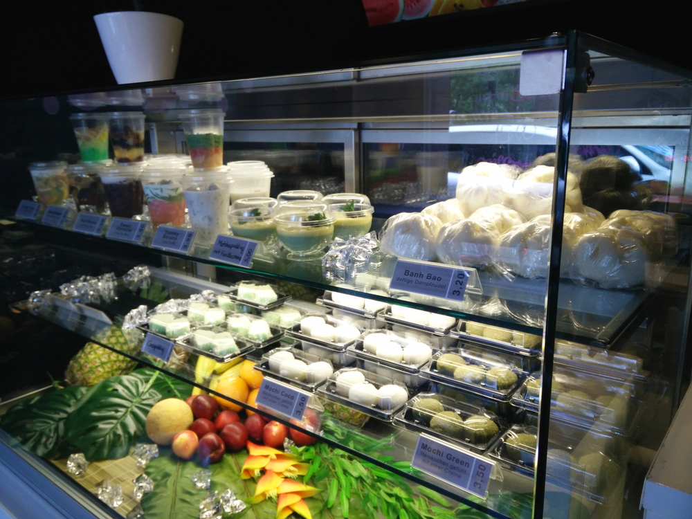
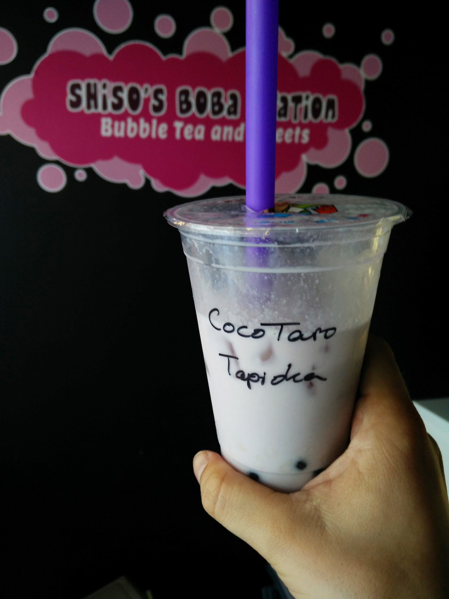
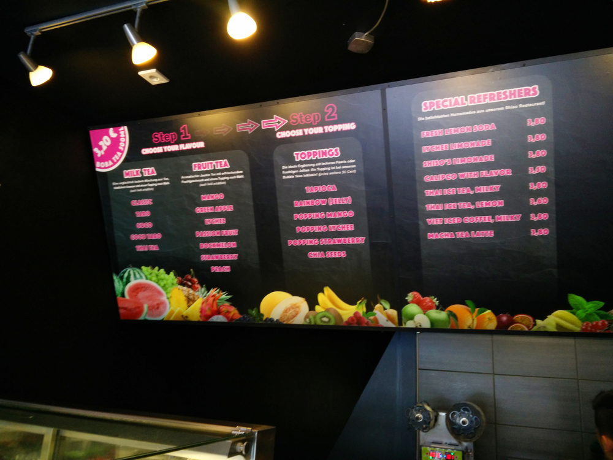

Marvin Mendel
Schreibt über: #Veranstaltungen #FSV #FFC #HalloFFM
In der Nähe der Konstablerwache
Wir schreiben das Jahr 2012. Menschen freuen sich auf die EM (oh, wait), die Sonne scheint (passt gut zum Text) und die Bubble Tea-Welle rollt über Frankfurt. Während Micha Bubble Tea Station schon 2011 im Bahnhofsviertel seine Pforten öffnete, kommen im gesamten Stadtgebiet immer neue Läden hinzu: In Zeilgalerie (†), Einkaufscentern, dubiosen Seitengassen der Zeil, sogar auf der Berger Straße. Später nimmt sich selbst McDonalds dem Produkt an. Nach circa einem Jahr verfliegt der Hype, immer mehr Bubble Tea Dealer müssen schließen und spätestens nachdem Forscher vor der Gefährlichkeit der kleinen Kugeln warnen, ist das jähe Ende des Trends besiegelt. Ungesund sei das Getränk und zudem könne man sich leicht an den Perlen verschlucken. Mag alles richtig sein, aber ungesund ist vieles. Ob Cola, Tabak, oder gar E-Zigarette. Und die Sache mit dem Verschlucken? Vielleicht sollten wir es zukünftig wie in den USA machen und selbst bei Kaffee den Warnhinweis "!Caution! Hot" anbringen.
Wie dem auch sei...die ohnehin überschaubare Zahl der Bubble Tea Connaisseure dürfte in den letzten Jahren immer weiter gesunken sein und nur wenige sind so verrückt wie ich und suchen selbst in fremden Städten, sei es London, Hamburg oder Kopenhagen, nach diesem in der Regel viel zu süßen Erfrischungsgetränk.
Um die geringe Zahl der Fans langsam aber stetig zu erhöhen, arbeitet ein kleiner neuer Laden namens Shiso's Boba Station fleißig an der Renaissance des Blasentees für junge Menschen. Der Ableger des guten asiatischen Restaurants Shiso - Pan Asian Food befindet sich eben neben jenem in der Schäfergasse und lockt mit allerlei süßen Köstlichkeiten. Die meisten Produkte lachen mich allein schon wegen ihrer Farbe an.

Ich - wagemutig wie ich bin - testete einen CocoTaro-Milchtee mit Tapiokaperlen. Also genau das, was ich in Bubble Tea Läden auch sonst immer am liebsten trinke. Und das Ergebnis kann sich sehen lassen: Geschmacklich 1A. Nicht zu süß und die Perlen hatten einen angenehmen Eigengeschmack. Wer es lieber fruchtig mag, wird bei Shiso's Boba Station ebenfalls fündig und die 3,80€ pro Getränk gehen absolut in Ordnung.


Wenn ihr also auch zu der Fraktion der unbelehrbarren Irren zählt und euch der Hochrisikosportart "Bubble Tea-Trinken" aussetzen wollt, dann dürftet ihr bei Shiso genau richtig sein. Auch weniger flüssige Desserts findet man im Angebot des Perlendrink-Newbies und so werde ich mir beim nächsten Besuch doch ganz frech einen Matchapudding einverleiben.

Schreibt über: #Veranstaltungen #FSV #FFC #HalloFFM
10.06.2016 15:03 Uhr
Mmmhhhhhhh, Bubble Tea!
In 2012 haben wir die Tapiokakugeln auf den Gleisen balanciert. Wer das am längsten schaffte, bekam alle Kugeln. Endlich geht es weiter!
Neue Antwort schreiben